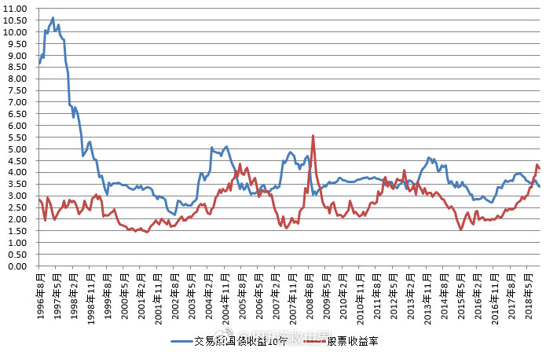

回复@E大关门大弟子-铁蛋:最好不要见。恶性通胀一般不会是一两年就结束。随之而来的是股市债市大幅下跌然后长期低迷。当然，也不是没有东西会涨，比如黄金。//@E大关门大弟子-铁蛋:有生之年可以再见一回嘛？ //@ETF拯救世界:回复@阮秋嬅:图片评论
//@ETF拯救世界:回复@阮秋嬅:图片评论  评论配图
评论配图

@ETF拯救世界:
目前这个阶段，我个人认为，除了股市，恐怕没有什么更好的投资领域了。
债券？你别看我们的债券今年涨了10%，我可以几乎肯定地说，中期回头看，债券的收益率一定比不上现在的股市。理由？看附图。
房地产？我不懂。你懂你买。不过REITS也可以当做资产配置的一部分放入组合是真的。
比特币，黄金，还是石油？后两者可以放入我们的组合，但不能是主要配置。至于前者，其它的单说，我都不知道哪里可以合法的买卖。
炒汇？不如买点合适的QDII了。
P2P？不解释。
实体？现在中国最优秀的几百家公司用只比净资产多一点的价格卖给你你都不敢买你还自己去做实体？
综上，现阶段，除了股市，包括A/港/美/欧。真没什么更好的选择了。
且买且珍惜吧。
债券？你别看我们的债券今年涨了10%，我可以几乎肯定地说，中期回头看，债券的收益率一定比不上现在的股市。理由？看附图。
房地产？我不懂。你懂你买。不过REITS也可以当做资产配置的一部分放入组合是真的。
比特币，黄金，还是石油？后两者可以放入我们的组合，但不能是主要配置。至于前者，其它的单说，我都不知道哪里可以合法的买卖。
炒汇？不如买点合适的QDII了。
P2P？不解释。
实体？现在中国最优秀的几百家公司用只比净资产多一点的价格卖给你你都不敢买你还自己去做实体？
综上，现阶段，除了股市，包括A/港/美/欧。真没什么更好的选择了。
且买且珍惜吧。
- 